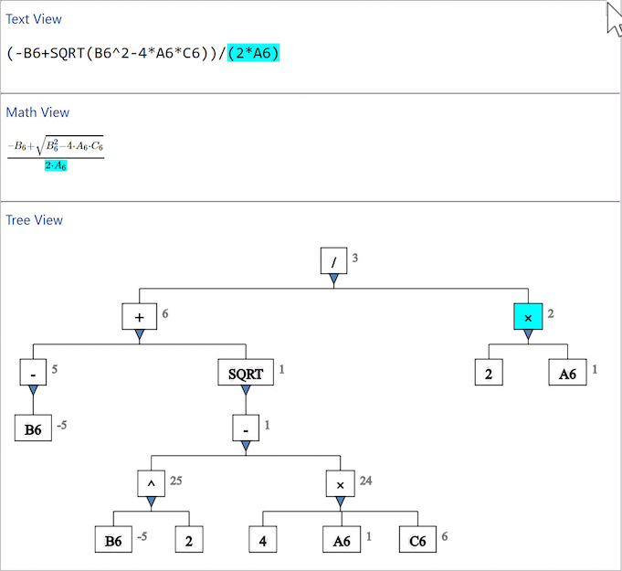

Navigating the Views
Selecting an element
Click an element in the tree view to focus attention on that element. Formula Forge highlights the element in all three views.

Selecting the denominator in the quadratic formula
Alternatively, click a symbol in either the text or math view to select the smallest element containing that element. Click an empty space in one of the three views to clear the selection.
Changing the selection
To change the highlighted element, click another element. Alternatively, press the Alt key (on a PC) or the Option key (on a Macintosh) together with an arrow key, as follows.
| Key pressed | Action |
|---|---|
| Alt - ↑ | Select the element above the current selection |
| Alt - ↓ | Select the leftmost element below the current selection |
| Alt - ← | Select the element to the left of the current selection (which is the previous argument of a function or the previous operand of an operator) |
| Alt-→ | Select the element to the right of the current selection |
The current selection does not change if there is no element in the indicated direction (e.g., no element above for Alt - ↑ or no element below for Alt - ↓).